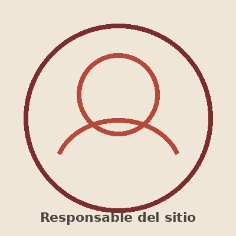

Sobre nosotros

¿Quién mantiene este sitio?
Este sitio es mantenido por el equipo de Raíces Artesanales, un emprendimiento familiar dedicado a la producción y venta de artesanías en tejidos, cerámicas y pinturas.
Nos encargamos tanto de la elaboración de cada pieza como de la actualización del catálogo, las fichas técnicas de los productos y la atención de las consultas que recibimos por este medio.
Nuestra historia
El proyecto nació de la necesidad de dar a conocer, de forma simple y accesible, el trabajo artesanal de tejedoras, ceramistas y pintoras que forman parte del emprendimiento. Buscamos que cualquier persona, utilice o no tecnologías de asistencia, pueda conocer y adquirir nuestros productos sin dificultades.
Compromiso con la accesibilidad
Este sitio fue construido priorizando el buen contraste de colores, la compatibilidad con lectores de pantalla, la navegación completa por teclado y una paleta de colores pensada para no depender únicamente del color para transmitir información.